{{appName}}
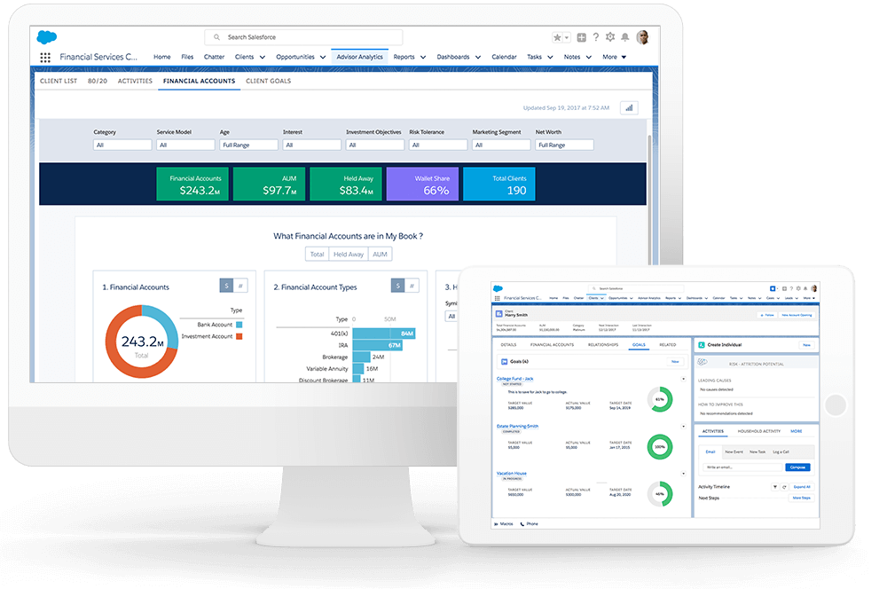Demo

Features
- 360-degree visibility into clients’ financial profiles
- Put the customer at the center of every interaction
- Provide insight into a client’s family wealth ecosystem
- Help advisors grow their book of business across multiple networks
- Help customer to achieve their life goals
- help advisors and personal bankers work faster and smarter than ever
Financial Services Cloud in Salesforce ecosystem

- Financial Services Cloud is fully integrated within the Salesforce ecosystem
- Data: This includes ingredients like multitenant architecture, data services, API services, and customer data.
- Intelligence: Einstein Analytics intelligence learns from all the information in the platform’s data layer to provide insights to your employees that help them make faster and smarter decisions.
- Apps: Existing applications make your business more successful, your advisors and personal bankers more productive. They help break down company silos and improve the customer experience. Applications include the Sales, Service, Marketing, Community, and Analytics clouds.
Financial Services Cloud in Salesforce ecosystem - contd.
- The data model augments and extends core Sales and Service Cloud functionality and tailors it to Finance industry, including adding a B2C model so the business can interact directly with clients
- Custom objects make it easy to model financial accounts, roll up financial information for clients and groups, and track customer goals
- A needs-and-referrals component helps his advisors to nurture and convert client leads
- Advisor analytics and communities make it easier to work smarter
- Relationship builder and map provides full perspective of each customer in the context of their entire financial world
Client Relationship Map

- Client Relationship Map shows Customer’s relationship tree
- Primary household info along along with the spouse household info
- Lists investment accounts, credit accounts, deposit accounts, insurance policies ...
- Shows how these accounts roll up for one customer or for an entire household
- Shows how much of a customer’s or spouse's assets are under the advisors management
Financial Services Cloud Home Page

- Quarterly performance of the advisor
- Referral assignements to the advisor
- Summary of the assigned referrals
- Top referrals
Financial Account

Person Account
An entity with whom the company is doing business, also known as a client or a customer 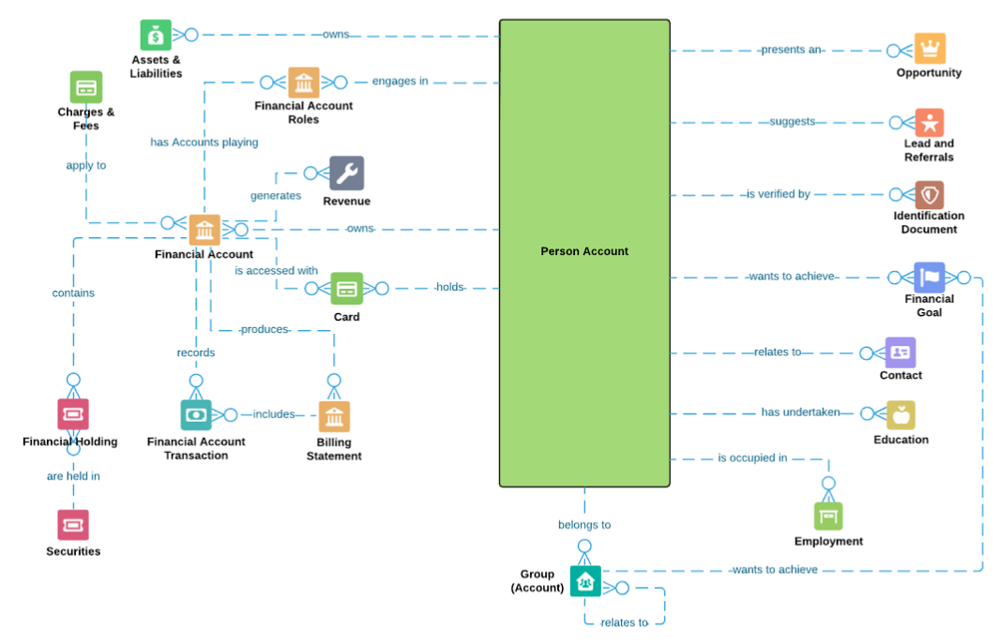Data Model
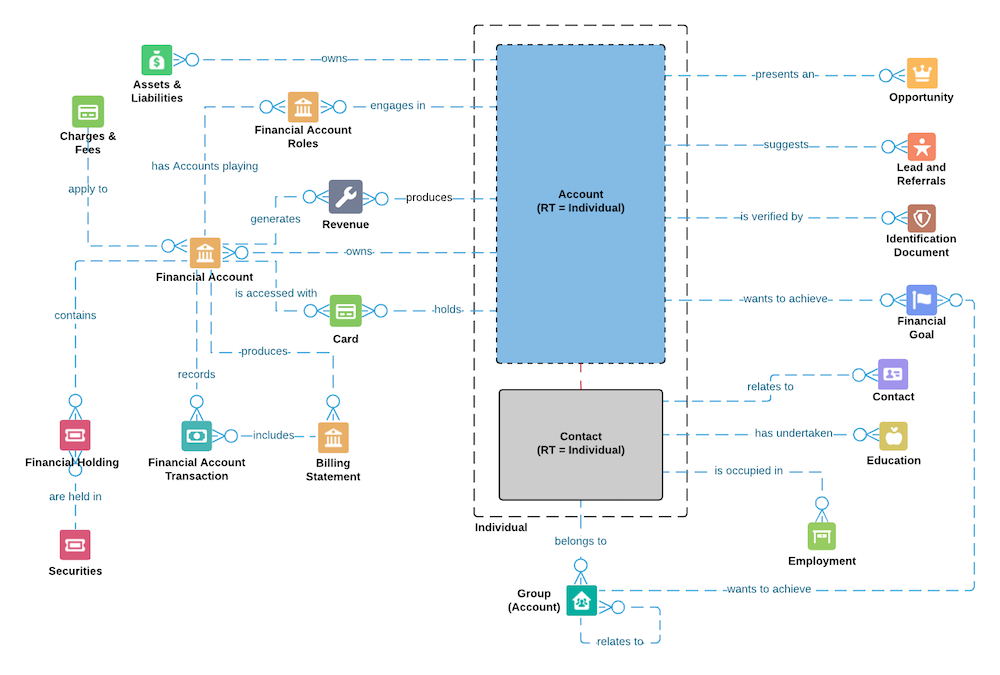
- Interactive Data Model
- sObjects List
- Account
- FinancialAccount
- Contact
- Asset
- Revenue
- AccountAccountRelation
- Assets&Liabilities
- Charges&Fees
- Card
- BillingStatement
- FinancialHolding
- Securities
- FinancialAccountTransaction
- Opportunity
- Lead
- IdentificationDocument
- FinancialGoal
- Education
- Employment
- UsePersonAccount
- LifeEvent
- ReciprocalRole
- Alert
- ContactContactRelation
- IndividualExcludedFields
- RollupByLookupConfig
- WealthAppConfig
- RollupByLookupFilterCriteria
- IndividualRecordTypeMapper__mdt
- CustomFieldSet__mdt
- InteractionFieldUpdate__mdt
Productivity cards in the Home page

- Daily Tasks, Opportunities, and Ranked Leads
- Client birthdays or upcoming calls or meetings
- Summary of the assigned referrals
- Guides advisors to the most productive activities and can manage their day more efficiently.
Customer Insights with Einstein Analytics

- Preconfigured analytics dashboards embedded directly into Financial Services Cloud
- Helps to instantly segment their book of business to make more informed client decisions all within a single, integrated application
- Provide key insights to log a call, task, or event, and turn an insight into action right away
- 80/20 dashboard. Compare client revenue against advising activities and identify key actions to apply to high-potential clients
My Book of Business dashboard

- Pinpoints the advisor's most and least valuable clients
- Most Valuable Clients by AUM (Assets Under Management)
Collaboration Support
- Provides access to the right people at the right moment to make sure that the company is aligned and help in building deep relationships with customers
- Help advisors to discover customer goals and help them accomplish those goals
- Help in building relationships across generations and households

Demo again!
Financial Services Cloud: Quick Start
Financial Services Cloud: Admin Start
Financial Services Cloud: User Guide
Advisors productivity tools
- Referrals: When you get the name of someone interested in a new product or service, business wants to track that name across multiple lines of business
- Referrals come from different sources - clients or their circle of influence or from different lines of business within an organization
- Intelligent needs-based referrals and scoring : Einstein Lead Scoring: Once a referral is identified, the Salesforce end-to-end workflow makes it easy to accept, assign, prioritize, and track
- Score: Indicates how likely a referral is to be converted, helps to prioritize and reward the most valuable referrers
Financial Services Cloud Demo
Clients in Financial Services Cloud
Getting Started
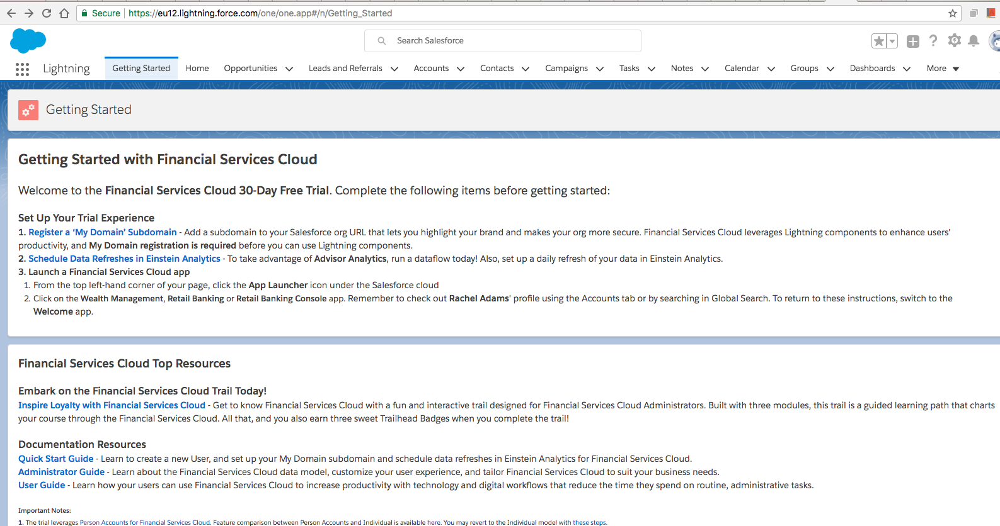Setting up My Domain
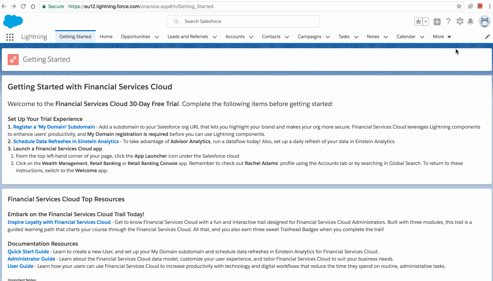Apps
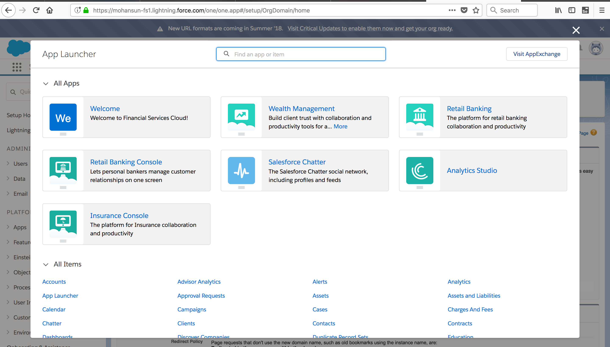Schedule Data Refreshes in Einstein Analytics
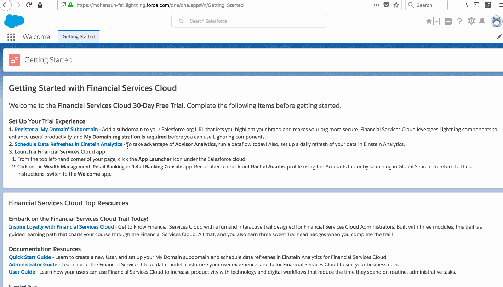Einstein Analytics Dataflow monitoring
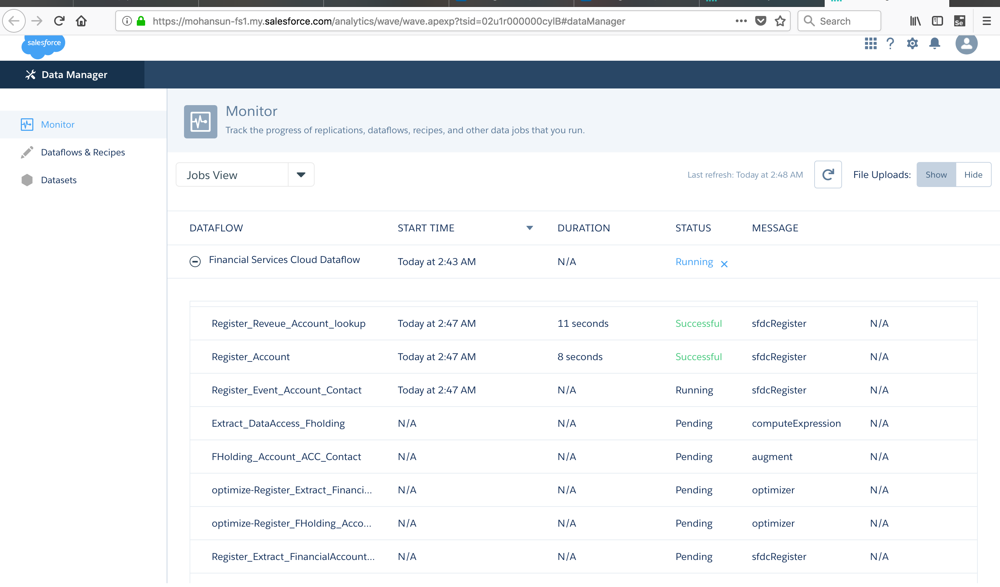Einstein Analytics Dataflow monitoring - Success
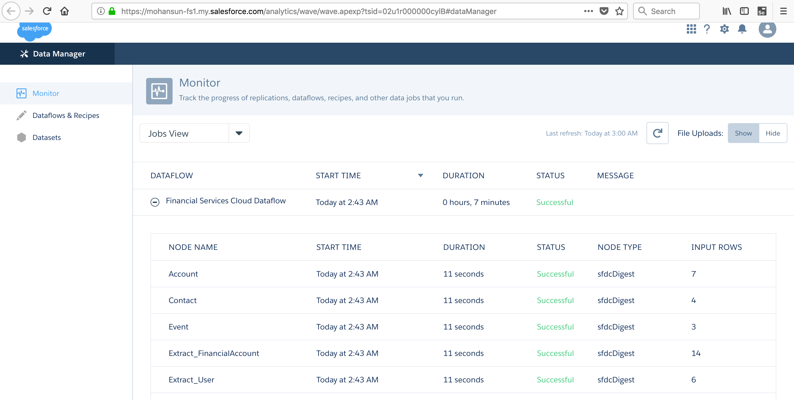Financial Services Cloud - Demo 1

Insurance Console
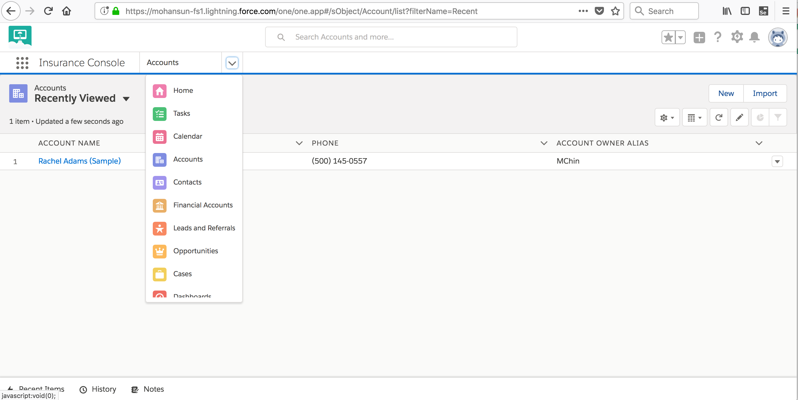Retail Banking Console
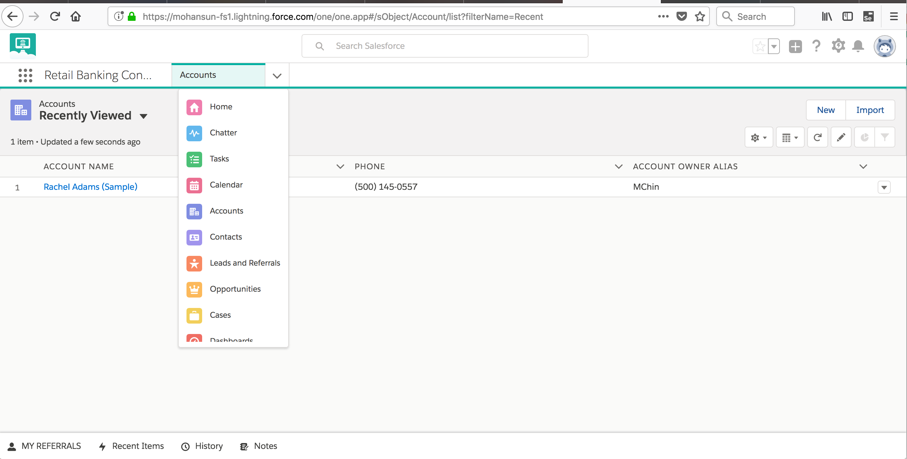FAQ: What is Salesforce Financial Services Cloud?
- The world's #1 CRM solution, reimagined for financial services. Financial Services Cloud is an integrated platform designed to drive stronger client relationships that last generations. Powered by Lightning, Financial Services Cloud makes it easy for advisors to deliver a concierge level of service with the personalized, proactive advice clients expect. With an enhanced set of productivity and engagement features, advisors can spend less time gathering client information and more time doing what they do best - providing holistic, goal-based advice that puts their clients at the center of everything they do.
FAQ: Who is Financial Services Cloud for?
- Financial Services Cloud provides an integrated platform that can be tailored to any financial services organization’s high-touch relationship model. Whether you are a part of a wealth management firm, an insurance company, or a bank, Financial Services Cloud can help your team deliver personalized advice at scale across any channel or device.
FAQ: How is Financial Services Cloud different from other wealth management tools?
- When we designed Financial Services Cloud, it was a collaboration with leading customers across the financial services industry to ensure we were creating a seamless experience that would promote more personal client engagements. With a unique Client Data Model at the center of Financial Services Cloud, firms have access to all the information needed to strengthen every client engagement opportunity. Strategic partnerships with best-in-class industry leaders make it easy to deliver superior service with portfolio rebalancing, custodian data services, and asset aggregation across all every account. Plus, as part of the Salesforce platform, Financial Services Cloud benefits from our continuous innovation with three seamless updates a year. This means you'll have ongoing access to new features and enhancements designed to grow your business faster.
FAQ: How can you grow your book of business with Financial Services Cloud?
- We’ve made it easier to track who’s who and who knows who. With Financial Services Cloud, you can turn your client base into an active referral network by tracking referrals from Centers of Influence or from within your own firm. And our related lists functionality showcases the individuals who are key to cultivating new business. The result? You’ll know more about your clients than just their investment strategy, and will have access to the networking tools needed to grow your book of business.
FAQ: How is Financial Services Cloud different from Sales Cloud?
- Built on the word's #1 CRM solution, Financial Services Cloud comes out of the box with all the core Sales Cloud features, plus new custom fields and objects modeling financial accounts, assets, liabilities, and goals for both individual clients and across entire households. This means advisors no longer have to spend time and money customizing their CRM to speak the language of their firm.
FAQ: How will Financial Services Cloud help me address fiduciary regulations?
- Financial Services Cloud, combined with Salesforce Shield, offers a powerful suite of compliance features. This means advisors, agents, and firms can adhere to new regulatory standards at scale. Easily drive repeatable and visible collaboration across the entire firm. Keep track of client relationships and communications. And establish consistent onboarding tasks to ensure the client's best interests are always at the center of each interaction.
FAQ: How secure is my client data with Financial Services Cloud?
- Very secure. In addition to Financial Services Cloud, Salesforce Shield capabilities offer an extra layer of security including tools that monitor data access and usage, and prevent malicious activity. With our premier security features, you’ll have access to Event Monitoring, Field Audit Trail, and Platform Encryption to ensure your clients' financial account information is kept confidential and secure.
FAQ: How do I get my existing data into Financial Services Cloud?
- You don't have to be a Salesforce expert to get up and running with Financial Services Cloud. We offer a number of helpful resources created specifically for data integration. We’ll work with you to build a complete solution that addresses all your business needs. Plus, we ensure a level of scalability that promotes continuous innovation.
- We understand that great technology alone is not enough to guarantee success. Each and every Financial Services Cloud customer has a robust ecosystem of partners to support your business as part of our Customer Success Services. From Salesforce Customer Success Managers to one of the million members in our success community, we have a team of people dedicated to your success.
FAQ: What is Groups and rollups
-
A group provides an overall view of its members by rolling up their information.
FSC includes a group record type for households. Use the household group to:- relate people to a household
- household members to external contacts
- a household to external contacts and accounts
-
Group membership defines the role of the
member within the group. For example, Rachel Adams plays the role of a spouse in the Adams Household.
The primary member is the person you contact first about things that affect the entire group. -
We can choose which
information rolls up (
Refer: Admin Guide
) to the group. The options are any combination of:
- Financial Accounts
- Financial Goals
- Tasks and Events
- Assets & Liabilities
- Referrals
Embedded dashboards - click to view asample
- Client List — Get a focused list of clients with robust filtering capabilities that surface financial data points and account details across your entire book of business.
- 80/20 — Maximize your time by comparing client revenue against advising activities and identify key actions for high-potential clients.
- Activities — See how activities are impacting your client relationships by analyzing interactions in the context of different activity types. Identify gaps and opportunities to improve future engagement.
- Financial Accounts — Respond to market conditions in a timely manner by uncovering the types of financial accounts and securities that make up your book of business.
- Client Goals — Measure client goals across your entire book of business. Spot key trends, and create tasks or opportunities in context to client data to help keep clients on track.
EA Dashboards in FSC
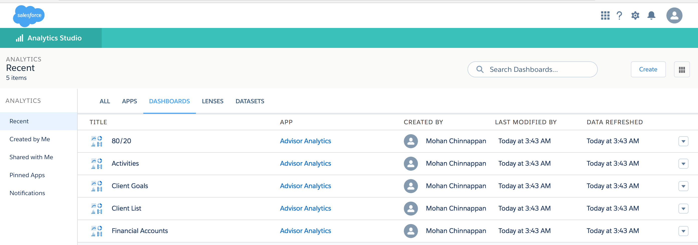EA Dashboards Datasets in FSC
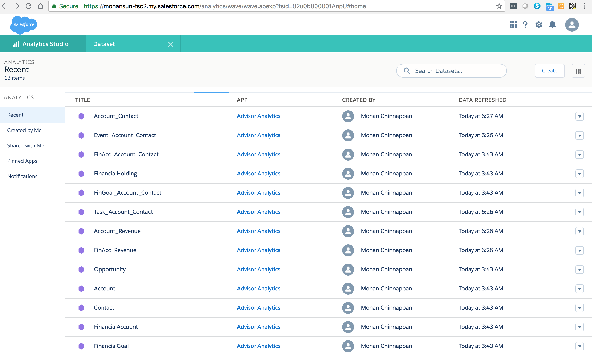EA Dashboards and datasets in FSC - demo
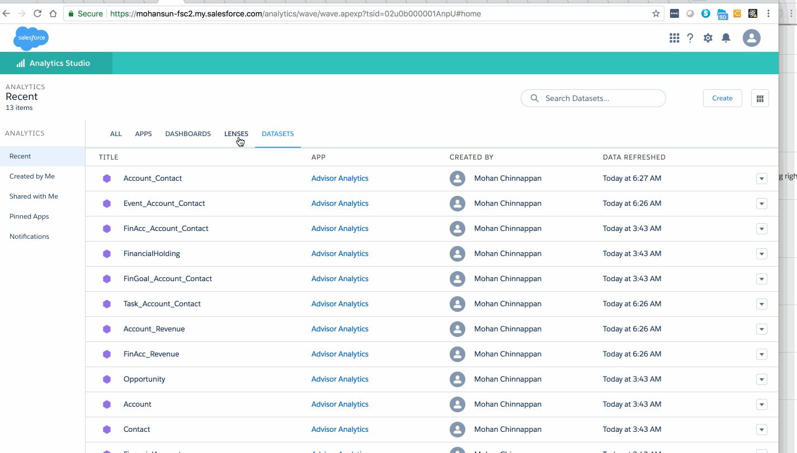EA Dashboard and datasets in FSC - demo-2
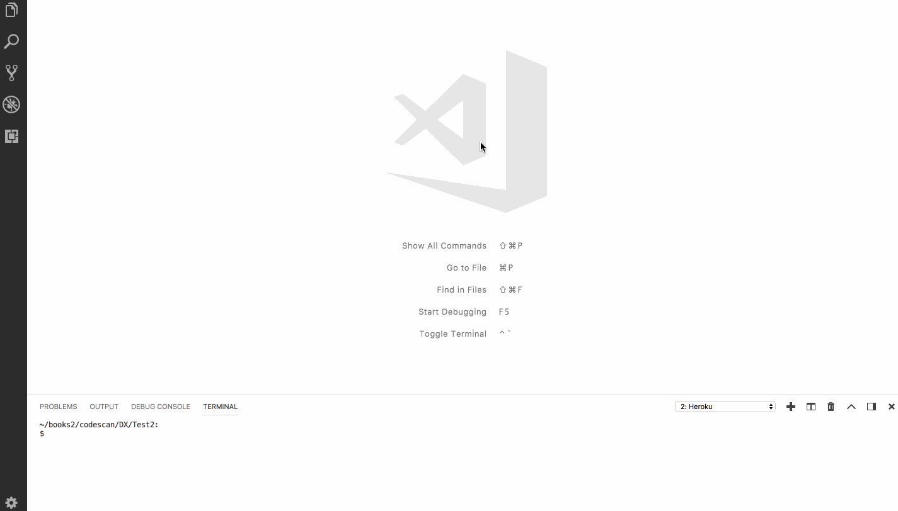FSC EA Dashboards - click to view datasets...
- Activities
- 80/20
- Client Goals
- Client List
- Financial Accounts
FSC EA Datasets - click to view dimensions, measures...
EA Dashboard - 80-20 - in FSC

SALESFORCE FINANCIAL SERVICES CLOUD DEMO
References
- Get started with a free 30-day trial of Financial Services Cloud
- Trail : Inspire Customer Loyalty with Financial Services Cloud
- Trailmix : Financial Services Cloud
- Introducing Financial Services Cloud Einstein: AI-Powered CRM for Financial Advisors
- FAQ
- Salesforce Financial Services Cloud - AppExchange
- Access Financial Services Cloud - Knowledge Article
- Einstein Analytics for Financial Services Cloud